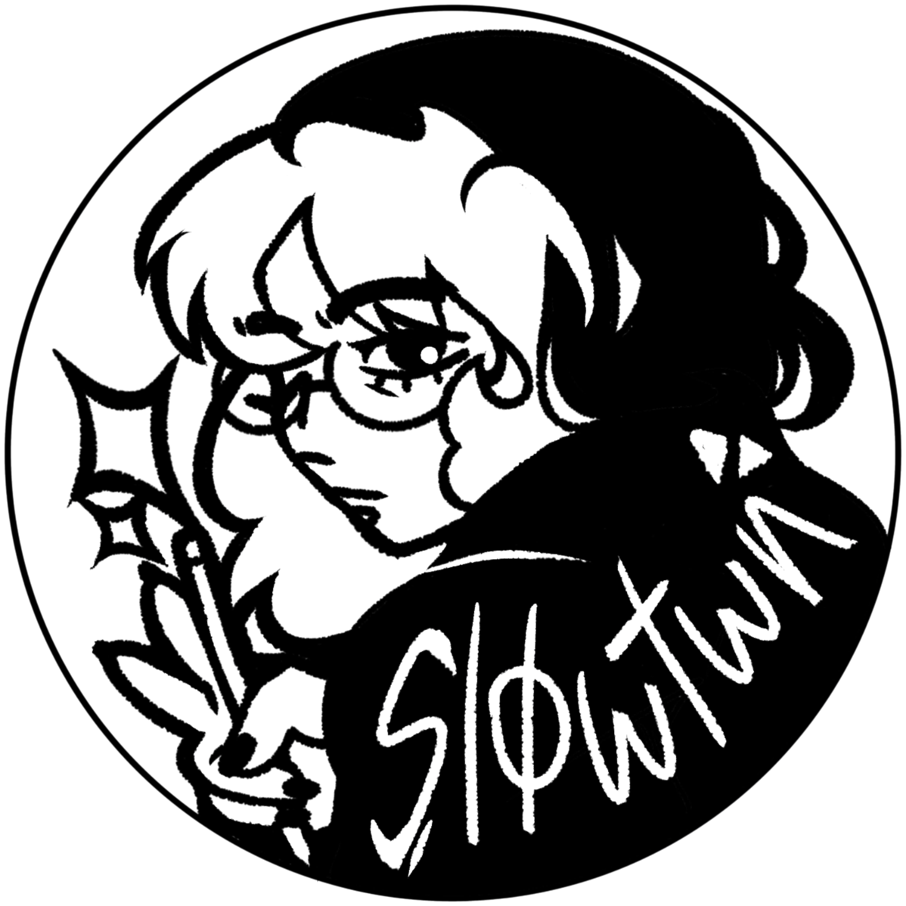

Introduction ⚝
My name is Cemre, full name is Cemre Su Türlü.
I am currently a 4th grade student at Yaşar Uni and I study Computer Engineering.
I am almost 22 years old, and I am quite fascinated by fictional media
Besides those, I am an artist and I plan to /hope to/ work in a field that I can still pursue my carreer in an artistic field.
And what sort of an artist am I? More info in the hobbies page.
More Random Info? Just So That It Looks Fuller
- ⚝Like I mentioned above, I am almost obsessed with the fictional characters I like. My current favorite is Alucard from Castlevania. I consider him as my "fictional other"- I guess I am married in that sense. Here he is: Alucard
- ⚝My hair color combos will include at least a shade of green.
- ⚝Relatively to the information above, I adore frogs. They are my favorite animals. 🐸
- ⚝I lowkey despise AI, especially generative AI and so called AI "artwork". As an artist, it is definitely NOT art.
- ⚝I know Turkish /shocker/, English, German. I am also learning Danish out of pure curiosity. Japanese too but not as accelarated as the rest.
- ⚝I am a very, very, picky eater. I do not know how I survive with this level of picky eating.
- ⚝My favorite genres of music are: EDM, Indie, Alternative Rock.
- ⚝By choosing this course, I was hoping to make my "song recommendation" website into a reality, which might happen actually, why not.
This is my logo, which is also a depiction of me. I drew it. My username is slowtwn on most platforms, hence the word on it.
